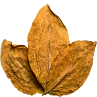

Los mejores puros habanos del mercado!

Se le conoce habitualmente como habano. La reputación cubana se presenta tanto por las características únicas de la región de Vuelta Abajo en la provincia de Pinar del Río, al oeste de la isla, en donde un microclima permite el cultivo de tabaco de alta calidad como por la habilidad de los fabricantes cubanos del puro. Es una Denominación de Origen y solo reservada a los puros fabricados en Cuba conforme a las normas de cultivo y producción establecidas por el consejo regulador.
¿Como se hacen los puros?
Según la tradición artesanal cubana, lo primero es seleccionar las hojas del interior o tripa. Se eligen de diferentes zonas de la planta: de la parte alta se coge el ligero, que aporta sabor; del centro el seco, que da aroma; y de la parte inferior el volado, que favorece la combustión
